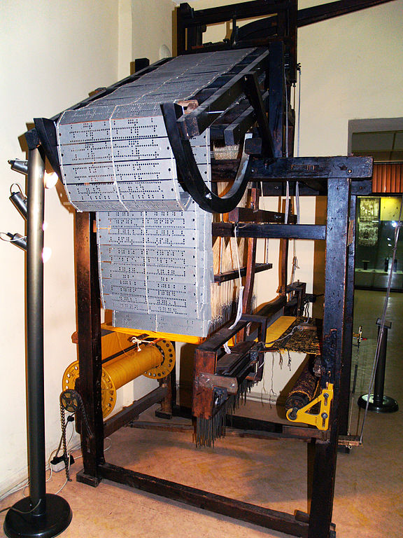

History of Programming
Throughout the history of technology, we have created machines that repeat some process. Mechanical innovations have led to the creation of incredibly complex machines that could repeat defined processes to produce amazing output.
Most of us are familiar with the mechanical systems generally at play in an engine, or with the level of mechanical complexity we see in farm equipment (especially antique machines). But it's often difficult for people to realize just how long we have been working towards machines that could reproduce arbitrary instructions. One early example of a machine that could reproduce sets of instructions is the Jacquard Loom, invented by Joseph Marie Jacquard in 1804.

The Jacquard Loom could read a series of punch cards and produce complex woven patterns based on the instructions. This was a mechanized form of weaving detailed patterns, and it was an essentially "programmable" machine. Granted, it could only be programmed to produce different patterns, but it used a combination of hardware (the loom) and software (the punch cards) to do the job.
Software Development
Later in the 19th Century, Charles Babbage came up with the idea of the Difference Engine, which was a calculation device specifically designed to solve polynomial equations. Babbage continued his work by designing an Analytical Engine, which would be able to interpret more general instructions to perform mathematical calculations. Although he was never able to build an operational version of the machine, he worked with Ada Lovelace to describe different algorithms and software methods of how the machine could theoretically work. Lovelace is credited with describing the first software algorithm thanks to her work with Babbage.
In the early 20th Century, calculation machines became more and more common. By the 1940s, electronic machines known as computers were being developed, and these machines could interpret arbitrary instructions to perform different calculations.

Photo: Betty Jean Jennings and Fran Bilas operating ENIAC
Computers like ENIAC, pictured above, were used to perform complex calculations at speeds that had never before been achievable. These machines allowed scientists and engineers to do more than was previously possible.
ENIAC was "programmed" by hard wiring specific circuits in the machine. Other computers of the time also used punch cards or magnetic tape to store their instructions. At this point, the people writing software were using very primitive interfaces (wires or holes in cards) to express their instructions.
Bigger Aspirations
As soon as computational power began to be created, we started thinking about how we would use these new devices. Vannevar Bush, head of the Office of Scientific Research and Development for the US Government through the 1940s, had come up with the idea of the Memex in the 1930s. In 1945 he published his influential essay "As We May Think", which describes his thoughts about the future of computing, information, and media.
"The Encyclopædia Britannica could be reduced to the volume of a matchbox. A library of a million volumes could be compressed into one end of a desk."
— Vannevar Bush, "As We May Think" (1945)
In the essay, Bush describes a desk that can access all of the information in the world. He posits the many new interfaces we will need to best make use of the data we have collected. He understands that storage will become smaller and smaller. He sees the collapse of all media into the digital form. And he even imagines small cameras we can use to record every moment of our lives in order to be able to archive and preserve those moments we wish to remember, or in order to retrace the history of our movement through the world.
Bush even imagines a method of linking documents and describing relationships between discrete pieces of information. He wants people to be able to define paths through information that can be shared with others in order to bring together unique realizations or understanding.
That last part sounds a lot like our World Wide Web, and that is not by accident. Creators of technologies like Hypertext and the Web were inspired by Bush's writing and worked to bring their own versions of his ideas to fruition.
Throughout the late 20th Century, computing hardware continued to develop at incredibly fast rates. Processing power grew exponentially, hardware size shrank considerably, and computers began to proliferate outside of dedicated server farms and research facilities.
By the end of the millennium, computers had permeated every type of business and almost every corner of the globe. Most businesses were connected to international computer networks, and tools like the World Wide Web were quickly established thanks to the rise of home computing.
The Modern Era
As computers have become more and more ubiquitous, so has software. We now live in a world where in many places it's impossible to obtain healthcare, register for college, or pay our taxes without a computer. Of course, all of these functions that computers perform are thanks to the software that computers can run.
We have created platforms for all different kinds of software. From games and virtual reality experiences that require monumental computing power to smartphones and web-based systems that operate on minimal processing performance, software is everywhere.
Photo: Tim Berners-Lee's Computer at CERN.
Tim Berners-Lee was a researcher at CERN when he came up with the idea of the World Wide Web. He first built an internal information management system for his colleagues, but quickly decided to make the project open source and to encourage others to use it. The notion of the World Wide Web and HyperText Transport Protocol (HTTP) caught on, and websites proliferated all over the world.
The web quickly became successful, which meant that software became intimately involved in spreading information and conducting business for the first time. The web is a platform that can deliver all sorts of content, but it also provides a bi-directional communication like no other ubiquitous system we've ever seen. The web brought the global network into our homes and changed our lives significantly.
The impact of software on our day-to-day lives was made even more profound with the advent of smartphones in the mid-2000s. Computing power had advanced sufficiently to give everyone a pocket-size device that rivaled the supercomputers of a decade prior. For the first time powerful software could move around with us and leverage the freedom and expanse of the entire world to bring us new and exciting capabilities.